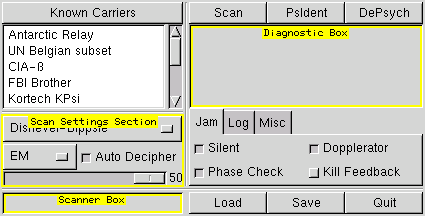
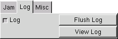

User Interface
Here are some screenshots to show where the different parts of the GUI referenced in the docs are, as well as what the options in the Misc tab do.
Main Window:

Tabs:

See Jamming for information on these options

See Logging for information on these options

- Ask To Quit
Ask if you are sure before quitting - Save On Exit
Save preferences before quitting - Center Windows
Cause the windows to be centered when opened - About
Opens a window that displays version and copyright information, and info about the author